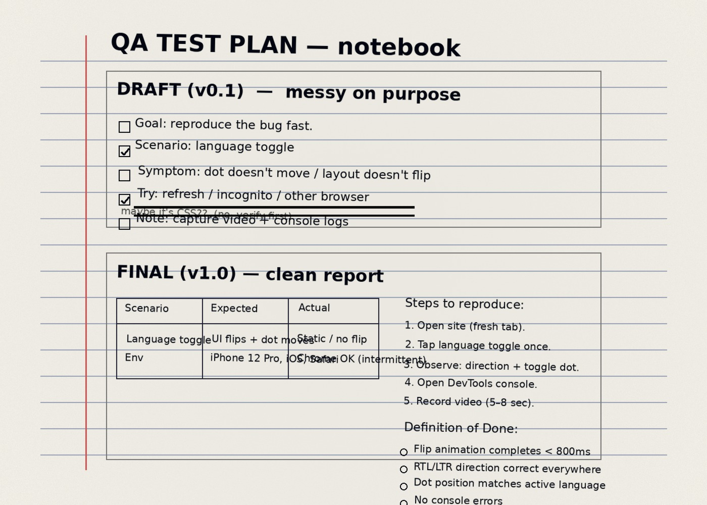

אימון
טכניקה לפני אגו
אם התנועה לא נקייה, המשקל לא משנה. הדיוק מייצר יציבות, ויציבות מייצרת כוח.
מה שמנצח לאורך זמן הוא תהליך: מדידה, עקביות, ודיוק. באימון הגוף לא משקר. ב-QA המערכת לא משקרת. בשניהם, השדרוג קורה כשעוברים ממאמץ אקראי לפרוטוקול ברור, שחוזר על עצמו.

אני לא עובד על “תחושה”. אני עובד על שיטה: הגדרה, מדידה, שחזור, ושיפור. זה נכון בחדר כושר וזה נכון מול מוצר אמיתי. כשיש עומס — לא מתרצים. מבודדים, מוכיחים, ומתקנים.
כלי קצר שמייצר דיווח ברור ומוכן לשימוש. משתמשים בו כשמשהו נשבר, כשפיצ׳ר מתנהג מוזר, או כשצריך להסביר בעיה כך שאפשר לשחזר מהר.
אני כן מביא דעה — אבל דעה שמבוססת על בדיקות. אמינות, שפה מדויקת, וניהול קצוות. פחות ניחושים, יותר הוכחות.
קצר, נקי, ונגיש.